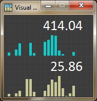
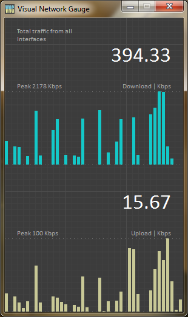
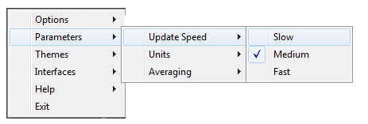
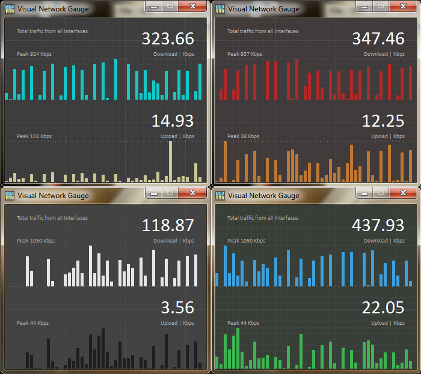

Contents
IntroductionInstallation
System Requirements
Usage
Customizations
Introduction
Visual Network Gauge or VizNetGauge in short, is a Windows utility to view and monitor the network traffic and speed. It provides a quick view of the current network speed.
VizNetGauge also plots a running bar chart of the upload and download speeds.
It auto detects the network interfaces and can show the traffic from a single interface or sum of all traffic going through all interfaces.
It also shows the uploaded, downloaded, total and remaining data counters.
It has a responsive, dynamic and minimal UI.
It provides many customizable features as mentioned below.
To explore more features and functions of this utility, right click on it.
This tiny but useful utility is completely free and open sourced. For more such amazing free apps please visit the links on the left.
The source code of this application is available for anyone to improve, fork, contribute or for use in your own application, without any restrictions.
Installation
Download the latest Windows Installer from: GitHub
Unzip the downloaded file and run setup.exe.
Follow the instructions. Run the program from start menu or by double clicking VizNetGauge desktop icon.
Please read the License before installing and using this software.
Note: The installer will optionally add a shortcut to the startup folder of Windows, so that VizNetGauge starts automatically when you start Windows. This is enabled by default. You can remove the shortcut from the startup folder if needed.
System Requirements
Minimum requirements:
Microsoft Windows 7 to 10
Single core CPU
1 GB RAM
5 MB of free space on hard disk
A monitor with at least 800 x 600 resolution.
At least one active network interface.
Usage
Simply run it. You can resize the window. Zoom in with a bigger window. A smaller window will gradually remove the content to make it more readable, keeping the essentials. It shows the name of the interface, peak speed and units in addition to the network upload and download speed. It also displays the data counters.
Note: There is a lower and higher limit for window size to keep things in order.


Options
Right Click on the main window to bring up the Pop Up Menu.
Options/Restore default settings: Does exactly that.
Options/Always on top: If you wish to view the speed all the time without losing the sight of VizNetGauge.
Options/Minimize to tray: If you have more important things to do and VizNetGauge in standing in the way.
Options/Configure Data Usage: Brings up the data usage settings dialog.
Options/Reset Data Usage History: Sets all data counters to 0.
Help/Online Help: Access this help online.
Help/About: Information about VizNetGauge.
Help/Check for updates: If updates are available the user is prompted to update and the download website is opened in the browser.
Help/Get more free apps: Opens the Oormi Creations GitHub repository where you can find more awesome, free and open source apps like this one.
Exit: Closes VizNetGauge.
Customizations
Parameters/Update Speed: You can select from fast, medium and slow, which are 300ms, 1000ms and 5000ms respectively.
Note: Update is frozen when you resize or move the window. This is not a bug. It enables smooth movements. Updates resume as soon as you leave it alone.
Parameters/Units: You can select the four units - Bps, Kbps, Mbps, and Gbps. The figures are scaled in that manner.
Note: The bps here is bits per second, not bytes or octates. This is customary in telecommunications field.
Also, Kbps is 1000 bps not 1024, and so on. You may want to know that if you wish to verify if VizNetGauge is correctly displaying the values.
Parameters/Averaging: You can display the instantenous (no averaging) or averaged speed over a number of samples. The options are 10, 30, or 60 samples. So for an update speed of 1 per sec, averaging set for 60 samples will display an average speed for the duration of 1 minute. If that sounds too complicated, leave it at default.
Themes: You do not like the colors, so you can change them. We provide 4 variations, probably you will like one of these. There is no other way to change the colors except to edit the source and build your own VizNetGauge.

Parameters/Interfaces: By default VizNetGauge totals all traffic from all interfaces. If you have ethernet and wifi both on, it will show a total speed of both combined. But you can select a single interface of your liking from the listed names. The Auto option tells VizNetGauge to automatically find out which interface has most traffic at the time and it switches to that one and displays its traffic as a single interface.
Note: If you see some strange interfaces there like isatap or Teredo tunneling, and you do not remember installing them, do not panic, your machine is not tapped. These are Microsoft's interfaces to make the internet work. Somehow they never show it, but these may appear as listed here.
Note: VizNetGauge uses Windows WMI performance counters to get the network speed. It is a strange beast. So it is recommended that you cross check with your network operator, if you think it is not reporting the exact number of bits you sent/received. It may count overhead etc.